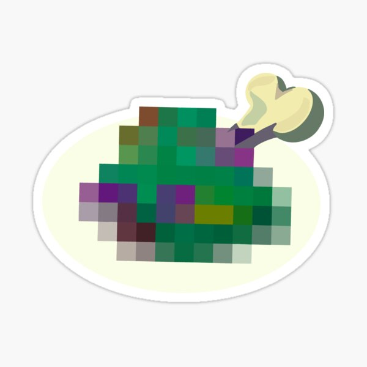

Dubious Food!

Description
A lovely stew made with free-range chicke- wait no, a fine seared steak salted to- uh wait it's warm milk I guess? Maybe an elixer?
Ingredients
- Tabantha Wheat (1 bundle)
- Fresh Milk (2 cups)
- Goat butter (4 tbsp)
- Full Chicken Wing (2 wings)
Steps
- Simmer milk in the wok that you're making this in for some reason for 8 minutes or until thickened
- Incorportate butter half a table spoon at a time
- Cut wings into small pieces to add while cooking
- Begin incorporating chicken until stew gets a slight brown tint -- wait crap no, those are Keese wings oh god
- That's okay, I can work with this, I can fix this. Keese are very approximately chicken anyway
- Okay, grind the wheat using a mortar and pestle (or Drillshaft if you have one around) and begin integr- that made it so much worse why is it that color oh jeez
- Okay okay okay, I can save this
- We're doing an elixer now! So lets put in some Fireproof Lizards and...
- I forgot about the butter, this can't be an elixer now. Oh god mom is gonna be so mad
- ... Actually, it doesn't smell too bad. I guess this is edible? Whatever, I'll just make Baked Apples again, can't screw that one up
Back to home